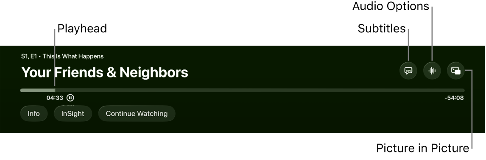
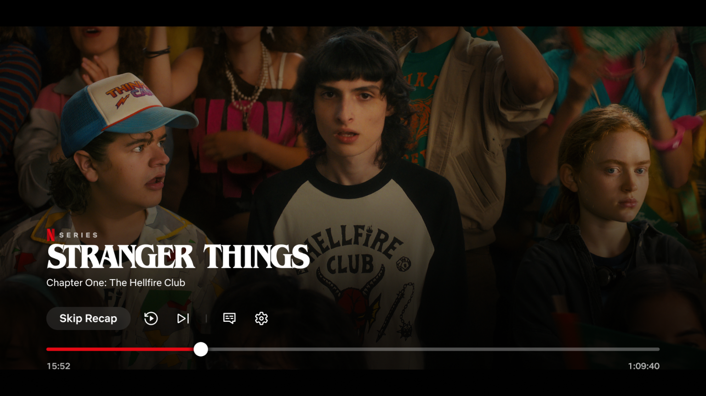
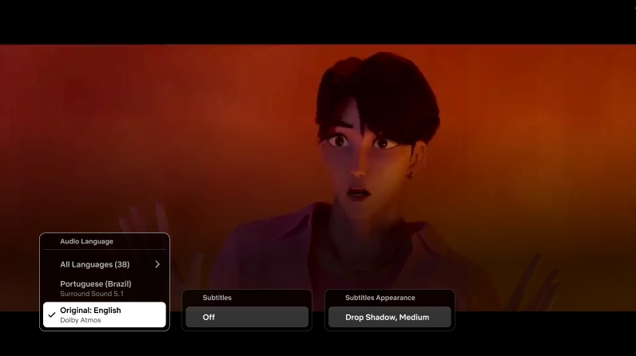

Retour à la proposition Atlas TV
Comment les lecteurs organisent l’attention
Layouts observés, recommandations et psychologie : trois niveaux à distinguer avant de poursuivre Atlas TV.
Étude du 28 octobre 2026 · Captures publiées et sources officielles · Aucun lancement sur la TV.
Voir la proposition du lecteur issue de cette recherche
Apple TV : contenu et réglages ont leurs places

Apple Support, guide Apple TV 4K. Extrait annoté du bandeau, pas un écran complet.
Le titre identifie le programme ; la progression indique la position ; les réglages ajustent la lecture ; les onglets donnent accès au contenu. Apple décrit cette séparation dans sa présentation tvOS.
Pour Atlas : distinguer Épisodes de Version, Source et Qualité, plutôt que traiter les quatre comme des fonctions identiques.
Netflix : un groupe compact et des actions contextuelles

What's on Netflix, test TV du 29 juillet 2026. Cette variante ne représente pas tous les appareils.
Une action textuelle ressort ; les commandes secondaires occupent moins d'espace. L'image reste dominante. Le menu de langues ci-dessous conserve aussi une partie du contexte vidéo.

Même source ; l'aide Netflix confirme l'accès aux langues pendant la lecture.
Les mécanismes à retenir
Reconnaître, plutôt que deviner
Une forme familière ne garantit pas que sa fonction soit comprise. « Source » est spécifique à Atlas : son nom doit rester visible dans les contrôles. NN/g sur les icônes.
Voir ce qui compte maintenant
Reporter les options spécialisées peut alléger les décisions. Mais les fonctions fréquentes doivent rester accessibles : pour Walson, Source et Qualité comptent. Divulgation progressive.
Garder son repère
Le focus ne doit pas changer sans raison visible. Fermer un menu doit retrouver sa commande ; une coche signale le choix confirmé. Consignes Apple.
Pouvoir essayer et annuler
Déplacer un curseur ou préparer une source doit permettre un retour sans perdre sa place. C'est une application du contrôle utilisateur, à vérifier sur notre parcours.
Ce sont des recommandations et des hypothèses pour Atlas, pas des mesures d'un effet psychologique de notre interface.
Ce que la finition change — et ce qu'elle ne prouve pas
Une expérience sur un simulateur de distributeur bancaire relie esthétique et facilité perçue. Elle ne valide pas un lecteur TV : il faut juger séparément la finition et la réussite des gestes.
Infuse : un exemple à ne pas transposer sans vérifier la plateforme
 Visuel Firecore officiel. Écarté comme preuve de layout TV.
Visuel Firecore officiel. Écarté comme preuve de layout TV.
Le guide Infuse Apple TV documente les gestes et l'accès aux options. Cela ne permet pas d'attribuer cette barre à la TV. Son volume logiciel ne doit pas être copié sur notre Devialet.
La direction proposée pour Atlas
- Identifier le contenu et la position sans effort.
- Séparer la navigation des épisodes des réglages de lecture.
- Nommer les fonctions ambiguës ; garder Source et Qualité faciles d'accès.
- Distinguer le flux demandé du flux effectivement joué.
- Garantir des retours cohérents, l'annulation et une autre source après erreur.
Je privilégie la séparation fonctionnelle d'Apple pour la prochaine étude. C'est une décision de design à comparer sur les mêmes tâches, pas un layout déclaré optimal.